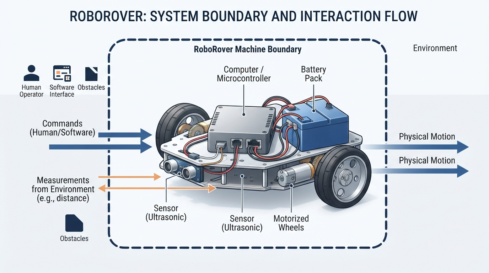
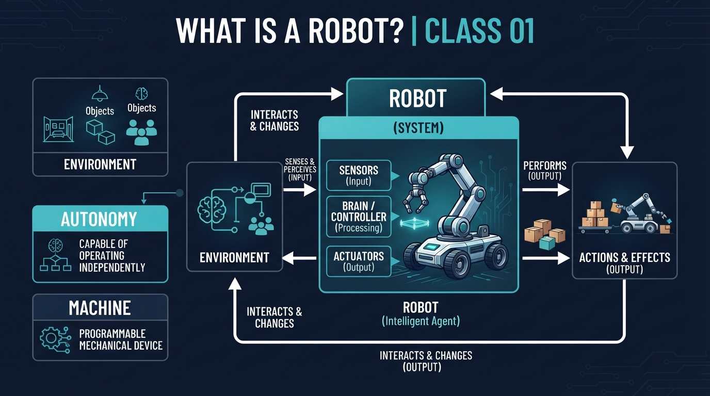
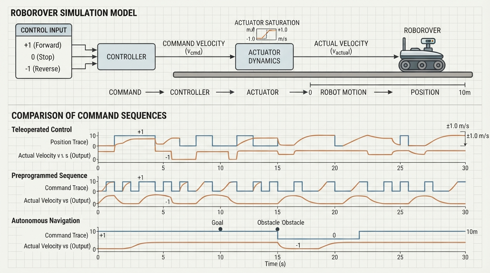

Class 1: What Is a Robot?
Where We Are in the Robotics Journey
Welcome to the beginning of the robotics course. You and RoboRover are starting with a question that sounds simple but is surprisingly important:
What counts as a robot?
Before building circuits, writing movement code, or studying sensors, we need a clear mental model. A robot is not defined only by its appearance. A robot may have wheels, arms, tracks, legs, or another kind of mechanism. It may be controlled directly by a person, follow a programmed sequence, or choose actions using software.
This class establishes the course’s working description of a robot. It also separates three ideas that are often mixed together:
- Robot identity: what kind of physical machine it is.
- Decision authority: who or what selects its immediate actions.
- Feedback: whether measured information affects current or future actions.
The next class, Sense → Think → Act, will examine the basic action cycle that connects sensors, decisions, and actuators.
Today We Will Learn
By the end of this class, you should be able to:
- describe a robot using the course’s working description;
- distinguish a robot from a general machine;
- explain what an environment is in robotics;
- distinguish human-directed, preprogrammed, and autonomous action;
- recognize feedback as a preview concept;
- compare several familiar systems without forcing every boundary case into a yes/no definition;
- calculate a simple robot movement distance;
- run a small Python simulation showing the same RoboRover hardware under different decision authorities.
2-Minute Recap
There is no previous class in this course. This is our starting point.
Begin with a familiar machine: a bicycle. It is a physical machine that can perform a task—carrying a person—but the rider supplies the immediate decisions and physical effort.
Now imagine a motorized rover. Its wheels are actuators: parts that produce controlled physical movement. A human might drive it with a joystick. A stored program might command it to move for a particular time. Or software might examine sensor readings and choose what to do next.
The wheels and motors do not decide anything by themselves. They are part of the physical system that carries out a decision.
The Big Idea

Figure: Robot identity concerns the physical machine and its controlled task; decision authority may belong to a human, a preprogrammed controller, or autonomous software.
For this course:
A robot is a physical machine commonly treated as a robot in engineering practice whose controlled actuators perform a physical task. Its immediate actions may be selected by a human operator, a preprogrammed controller, or autonomous software. This is a working description for teaching, not a universal necessary-and-sufficient test.
This definition has two important parts.
First, a robot is a physical machine. A computer simulation of a robot is useful, but the simulation itself is not the physical robot. The real robot has mechanisms, sensors, actuators, power, and a physical relationship with its surroundings.
Second, its controlled actuators perform a physical task. RoboRover might drive, carry a small object, push a marker, or rotate a camera. The task is performed through physical action.
There is no single universally accepted binary boundary for the word robot. Engineering communities may use the word differently depending on the application. Therefore, this course uses clear examples and the working description above rather than pretending that every unusual appliance has one universally correct answer.
Robot identity is not the same as autonomy
Suppose RoboRover has motors, wheels, a battery, and a radio receiver.
- If a student drives it using a joystick, RoboRover is a teleoperated robot. “Teleoperated” means operated from a distance by a human.
- If RoboRover follows a stored movement sequence, it is still a robot. Its immediate actions are selected by a preprogrammed controller.
- If RoboRover measures its surroundings and selects task-level actions using software, it is an autonomous robot.
The hardware can remain the same while the decision authority changes. Robot identity and autonomy are separate questions.
See It in Your Head
AI-Generated Engineering Visual · Professor OS

How to read this visual: Trace the signal or idea from left to right. Match each block to the lesson explanation, then predict what would change if one block produced a wrong value.
Imagine a cutaway drawing of RoboRover in a rectangular room.
- Inside the rover: a battery, small computer, motor drivers, and wiring.
- At the left and right wheels: two motors, shown as actuators.
- On the front: a distance sensor pointing toward a cardboard box.
- Outside the rover: the floor, walls, box, and a human holding a controller.
Now draw three versions of the same scene:
- Human-directed: a radio signal travels from the controller to RoboRover. The human chooses “forward” or “stop.”
- Preprogrammed: a stored list inside the computer says “move forward, stop, turn.” The controller follows the list.
- Autonomous: the sensor measures the box. Software uses that measurement to select an action, such as stopping when the box is close.
The physical rover has not necessarily changed. The source of the immediate decision has changed.
The environment is everything relevant outside the robot that can affect the task or be affected by it: the floor, box, walls, people, light, dust, and so on. The boundary depends on the question being studied. For a wheel-motion experiment, the floor may be central while the room’s lighting may not matter.
Core Concept

Figure: Different systems can have different decision authority and feedback behavior; robot identity and control mode are separate questions.
Machine
A machine is a physical system designed or arranged to use energy and mechanisms to perform a task. A hand-cranked pencil sharpener, washing machine, bicycle, and electric drill are machines.
Not every machine is commonly called a robot. The word robot usually highlights a physical machine whose controlled actuators perform a task in a robotics context.
A machine may be:
- manually operated;
- controlled by a simple switch;
- controlled by a programmed sequence;
- controlled using measurements and software.
These features alone do not settle every classification question.
Environment
A robot does not act in empty space. It operates in an environment: the physical surroundings relevant to its task.
For RoboRover, the environment might include:
- the floor that supports its wheels;
- a box that it may approach or push;
- walls that limit movement;
- a person who teleoperates it;
- lighting that affects a camera sensor.
The environment is important because a robot’s actions have consequences. A motor command is not just a number in a program; it can make a wheel rotate, move the rover, and possibly bump into something.
Autonomy
Autonomy describes how much task-level decision-making is performed by the robot’s software or onboard system rather than by a human operator.
A highly autonomous robot can select actions for a task using its own sensors, software, and stored goals. Autonomy is not the same as consciousness, intelligence in the human sense, or freedom from all programming. An autonomous robot still operates according to hardware, software, power, limits, and design choices made by people.
A remote-controlled rover can be a robot without task-level autonomy. An autonomous vacuum can be a robot with task-level autonomy.
Feedback: an introductory preview
In robotics and control engineering, feedback control broadly means that a measured state or output influences a current or future control action in relation to a desired behavior or state.
A thermostat is a useful example:
- desired state: the selected temperature, such as 21 °C;
- measured state: the room temperature;
- action: turn heating on or off.
The rule may be simple and predetermined, but the action responds to a measurement. Threshold and hysteresis controllers can still be feedback controllers. In this course, we will use sustained feedback regulation when we specifically mean repeated measurement-and-correction over time.
A single sensor event that starts a fixed timed sequence is not automatically sustained feedback regulation. The measured state must actually influence a current or future control action in relation to the desired behavior.
One compact comparison
| System | Commonly called a robot? | Immediate decision authority | Feedback in the described behavior? |
|---|---|---|---|
| Timer-controlled traffic signal | Not normally | Preprogrammed timer | No; timing follows the stored schedule |
| Thermostat | Not normally | Preprogrammed rule responding to temperature | Yes; measured temperature affects heating |
| Teleoperated rover | Yes | Human operator | May or may not; local feedback depends on the design |
| Industrial robot arm | Yes | Often a preprogrammed task sequence | Local feedback is common |
| Autonomous vacuum | Yes | Software selects task-level actions | Feedback is commonly used |
“Preprogrammed” and “feedback” are not mutually exclusive categories. An industrial arm may execute a preprogrammed task while its joint controllers use measured position to adjust motor action. The program can be fixed while some control actions respond to measurements.
Automatic doors and similar appliances are boundary cases: they share sensing, computation, and actuation with some robots, but terminology varies by context. We will not use them as a scored yes/no test.
Math Without Fear
A simple robot movement calculation begins with:
where:
- \(d\) is distance traveled, measured in metres (m);
- \(v\) is average speed, measured in metres per second (m/s);
- \(t\) is elapsed time, measured in seconds (s).
Suppose RoboRover moves at an average speed of:
for:
Then:
The seconds cancel:
So RoboRover’s idealized distance is 1.80 m.
This is a model, not a guarantee. It assumes the rover’s average speed really is 0.30 m/s and that it moves along the intended path. Real wheels may slip, the battery voltage may change, and starting or stopping may take time.
Worked Robotics Example

Figure: The ideal distance model multiplies average speed by elapsed time, while real wheel slip and changing conditions can create error.
RoboRover is assigned a physical task: move a lightweight blue block from a marked starting area toward a collection tray.
Its motors are controlled so that the rover’s average forward speed is \(0.25\ \text{m/s}\). The movement command lasts \(8\ \text{s}\).
Using:
we obtain:
Interpretation: under the simple model, RoboRover travels 2.00 metres during the command.
Now consider three decision-authority versions of the same task:
- Teleoperated version: a human watches RoboRover and decides when to move and stop.
- Preprogrammed version: the controller commands forward motion for 8 seconds.
- Autonomous version: software uses sensor measurements and chooses when to move or stop according to the task.
All three can be robots under our course description. The distinction is not “robot versus not robot”; it is who or what selects the immediate action.
Engineering caveat: commanded speed is not measured speed
A motor command such as “50 percent power” is not automatically a speed measurement. Two wheels may rotate at slightly different rates. One wheel may encounter dust or a smoother surface. The rover may veer away from a straight line.
A careful engineer would measure the actual distance, repeat the test, and compare the result with the ideal calculation. This is an early example of the difference between a model and a physical result.
Python Lab

Figure: The simulation keeps the hardware and speed model fixed while changing who or what selects the commands.
This program models the same RoboRover hardware under three kinds of decision authority:
- a human gives a sequence of commands;
- a preprogrammed controller follows a stored sequence;
- autonomous software checks whether an obstacle is detected and decides whether to move.
The model uses a one-dimensional track. Position is measured in metres. Each time step represents 1 second, and forward motion has an average speed of \(0.5\ \text{m/s}\).
Predict before you run it
Before running the program, predict:
- Which mode will travel farthest?
- Which autonomous time steps will produce no movement?
- What will the three final positions be?
import matplotlib.pyplot as plt
TIME_STEP_S = 1.0
SPEED_M_PER_S = 0.5
def simulate(commands):
"""Return position after each command, including the starting position."""
positions = [0.0]
position_m = 0.0
for command in commands:
position_m += command * SPEED_M_PER_S * TIME_STEP_S
positions.append(position_m)
return positions
# The human operator chooses these commands:
# 1 means forward, 0 means stop.
human_commands = [1, 0, 1, 0]
# The stored program chooses these commands in advance.
preprogrammed_commands = [1, 1, 1, 0]
# The environment reports an obstacle during time steps 3 and 4.
obstacle_detected = [False, False, True, True]
# Autonomous software selects its own command from the measurements.
autonomous_commands = []
for obstacle in obstacle_detected:
if obstacle:
autonomous_commands.append(0)
else:
autonomous_commands.append(1)
runs = {
"human-directed": simulate(human_commands),
"preprogrammed": simulate(preprogrammed_commands),
"autonomous": simulate(autonomous_commands),
}
final_positions_m = {}
for name, positions in runs.items():
final_positions_m[name] = positions[-1]
# Executable verification of the exact results.
assert autonomous_commands == [1, 1, 0, 0]
assert final_positions_m["human-directed"] == 1.0
assert final_positions_m["preprogrammed"] == 1.5
assert final_positions_m["autonomous"] == 1.0
print("Autonomous commands:", autonomous_commands)
print("Final positions (m):", final_positions_m)
print("Verified: all final positions match the model.")
time_s = [0.0, 1.0, 2.0, 3.0, 4.0]
for name, positions in runs.items():
plt.plot(time_s, positions, marker="o", label=name)
plt.title("RoboRover: same hardware, different decision authority")
plt.xlabel("Time (s)")
plt.ylabel("Position (m)")
plt.grid(True)
plt.legend()
plt.tight_layout()
plt.show()The simulate function applies the simple movement model. A command of 1 means forward, while 0 means stop. The runs dictionary stores each experiment under a descriptive name.
The autonomous loop is the key conceptual line:
obstacle = True
autonomous_commands = []
if obstacle:
autonomous_commands.append(0)The software uses information about the environment to select an action. That is a small example of task-level autonomy.
The assert statements are executable checks. If one of the exact numerical claims is wrong, the program stops with an error instead of silently displaying a misleading result.
Mini Simulation or Game
Try changing one thing at a time:
- Change
human_commandsto[1, 1, 0, 1]. - Change
preprogrammed_commandsto[1, 1, 1, 1]. - Change
obstacle_detectedto[False, True, False, False]. - Before running each change, predict the final position.
For this simple model, each forward command changes position by:
A stop command changes position by \(0\ \text{m}\).
Now turn the activity into a classification game. For each run, answer:
- Is the physical system commonly called a robot?
- Who has immediate decision authority?
- Is the software responding to an environment measurement?
The hardware remains the same in all three runs. Only the decision authority and command-selection rule change.
What Should Happen?
The original program should verify these results:
- autonomous commands:
[1, 1, 0, 0]; - human-directed final position: \(1.0\ \text{m}\);
- preprogrammed final position: \(1.5\ \text{m}\);
- autonomous final position: \(1.0\ \text{m}\).
The preprogrammed version travels farthest because it contains three forward commands. The autonomous version moves for two seconds, then stops when the simulated obstacle is detected. The human-directed version also has two forward commands, but they occur at different times.
The plotted lines show position increasing during forward commands and remaining level during stop commands.
Common Mistakes
Mistake 1: “A robot must be autonomous.”
No. A teleoperated rover is commonly called a robot even though a human selects its immediate motion.
Mistake 2: “Anything with a sensor is a robot.”
No. A thermostat uses a sensor and feedback control but is not normally called a robot.
Mistake 3: “A fixed program cannot use feedback.”
It can. A preprogrammed task may include lower-level feedback controllers that use measured state to adjust actuator commands.
Mistake 4: “A sensor event automatically means closed-loop control.”
Not necessarily. If a sensor starts a fixed timed sequence and the later actions do not use the measured state, that is not sustained feedback regulation merely because sensing occurred.
Mistake 5: “The calculated distance must equal the measured distance.”
The equation uses an average-speed model. Wheel slip, uneven surfaces, motor differences, battery voltage, and mechanical limits can create an error.
Mistake 6: “Autonomy means the robot has no programming.”
Autonomous behavior is produced by designed software, rules, models, and hardware. It is not the absence of programming.
Try It Yourself
Challenge: classify RoboRover’s three modes
Create a table with these columns:
- RoboRover mode;
- commonly called a robot?;
- immediate decision authority;
- feedback in the described behavior?;
- one sentence explaining why.
Use the three program modes:
- human-directed;
- preprogrammed;
- autonomous obstacle response.
Your explanation should keep robot identity separate from control mode.
Optional extension
Modify the program so the autonomous rover reverses for one second when an obstacle is detected. Use -1 for reverse.
Before running it, predict the final position for:
autonomous_commands = [1, 1, -1, -1]Using the program’s model, the result should be:
The rover ends where it started in this idealized one-dimensional model. In a real rover, reversing would not guarantee returning to exactly the same location because of slip and uneven motor behavior.
Quick Quiz
- According to this course’s working description, which feature is central to a robot?
- A. It must look human-like.
- B. Its controlled actuators perform a physical task.
- C. It must be fully autonomous.
- D. It must use artificial intelligence.
- RoboRover is driven by a person using a radio controller. Is it commonly called a robot, and who selects its immediate actions?
- A thermostat turns heating on when measured temperature is below a setpoint. Is feedback present? Is the thermostat normally called a robot?
- A preprogrammed industrial robot arm uses joint measurements to adjust motor commands while carrying out a stored task. Can it be both preprogrammed and use feedback?
Answers
- B. The course working description focuses on a physical machine whose controlled actuators perform a physical task. Human-directed, preprogrammed, and autonomous action are all allowed.
- Yes, it is commonly called a robot. The human operator selects its immediate actions. It is teleoperated and need not have task-level autonomy.
- Yes, feedback is present because measured temperature affects the heating action in relation to the desired temperature. A thermostat is not normally called a robot.
- Yes. A preprogrammed task sequence and feedback control can coexist. The task sequence may be fixed while local controllers use measurements to adjust motor action.
Real Robot Connection
When engineers describe a robot, they ask more than “Does it have a computer?”
They examine:
- what physical task the actuators perform;
- what parts belong to the robot and what parts belong to the environment;
- who or what selects immediate actions;
- which measurements affect those actions;
- what assumptions the model makes;
- what happens when sensors are noisy or mechanisms behave imperfectly.
For RoboRover, a human joystick command might arrive late because of radio delay. A distance sensor might report a slightly incorrect value. A wheel might spin without producing the expected movement. These are not reasons to abandon the robot definition; they are engineering realities that must be measured and handled.
This class also prepares us for the next one. A robot’s physical machine contains sensors that gather information and actuators that affect the environment. Between them is a decision process. In the next class, we will study the repeating pattern:
Sense → Think → Act
Vocabulary
- Robot: For this course, a robot is a physical machine commonly treated as a robot in engineering practice whose controlled actuators perform a physical task. Its immediate actions may be selected by a human operator, a preprogrammed controller, or autonomous software. This is a working description for teaching, not a universal necessary-and-sufficient test.
- Machine: A physical system designed or arranged to use energy and mechanisms to perform a task.
- Actuator: A component that produces controlled physical action, such as a motor moving a wheel.
- Environment: The relevant physical surroundings that can affect a robot’s task or be affected by the robot.
- Decision authority: The person, stored controller, or software system that selects a robot’s immediate action.
- Teleoperation: Operation of a robot by a human from a distance.
- Preprogrammed controller: A controller that follows instructions or a task sequence prepared in advance.
- Autonomy: Task-level decision-making performed by the robot’s onboard system rather than selected immediately by a human operator.
- Feedback control: Control in which a measured state or output influences a current or future control action in relation to desired behavior or state.
- Sustained feedback regulation: Repeated measurement-and-correction over time.
- Model: A simplified description used to predict or calculate how a system behaves.
Further Learning
Useful search-friendly resources and topics:
- “robotics actuator sensor controller basics”
- “teleoperation versus autonomy in robotics”
- “feedback control thermostat example”
- “robot operating environment”
- introductory robotics chapters on robot systems and control architecture
- beginner Python plotting with
matplotlib
As you study examples, keep asking two separate questions:
- Is this physical system commonly treated as a robot?
- Who or what selects its immediate actions?
Next Class
Sense → Think → Act
Next, RoboRover will meet its sensors. We will trace how a physical measurement becomes information, how a controller uses that information, and how an actuator changes the environment. We will begin building the foundational architecture used throughout robotics.